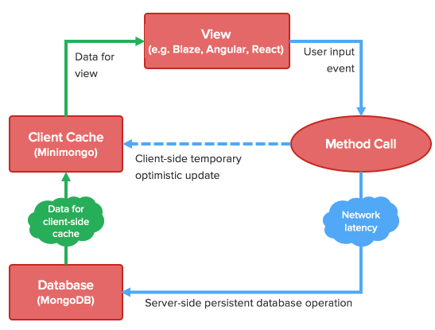

All in One.
So what is Meteor?
Meteor is a complete open source platform for building web and mobile apps in pure JavaScript.
Written in JavaScript on the Node.js platform, Meteor is an open-source Isomorphic Development Ecosystem (IDevE) for efficiently and painlessly developing web and mobile applications.
Meteor is 2 things:
- A library of packages: pre-written, self-contained modules that you might need in your app.
- A command-line tool called Meteor.
The Meteor Platform
- Blaze - Reactive UI Library.
- Tracker - Reactive programming made easy.
- DDP - Websocket-based data protocol.
- Livequery - Live database connectors (creates a reactive database cursor that updates in real time and notifies the server and the clients about those changes in a performant way).
- Isobuild - Unified build system for browser, server, and mobile.
- Minimongo - In-memory JS reimplementations of MongoDB.
The Meteor Tool
- Solve package versions.
- Download any necessary packages.
- Build your app with Isobuild.
- Run it locally.
- Do a hot code push whenever the source files change.
The Meteor Tool pulls together all of the key pieces of the Meteor development workflow, including:
- Isobuild (for building your app)
- Developer Accounts (for logging into developer services)
- The official Package Server (for searching, downloading, and publishing packages)
- Version Solver (for managing dependency versions)
- Meteor deploy hosting service.
- Additionally, it provides an local development mode with nice features like file watching and live code reloads.
Hot Code Push
When a new version of the app is deployed, client will be updated in place, including both browser and mobile clients. The client detects new versions by making a DDP subscription to the server to get the code version that the client is supposed to be using. This is implemented by the autoupdate package.
This package is the heart of Meteor's Hot Code Push functionality. It has a client component and a server component component. The client component uses a DDP API provided by the server to subscribe to the version ID of the most recent build of the app's client. When it sees that a new version is available, it uses the reload package to gracefully save the app's state and reload it in place.
The hot code push process cooperates with the native mobile app containers generated by Isobuild, so that the mobile app saves the updated code to the device so that the app starts fast and works offline.
Webapp
Webapp is a complete solution for delivering modern web-platform-based apps to users. This includes:
- Serving apps to browsers, so that when the user types myapp.com into the location bar, your app starts in that browser tab.
- Pushing over-the-air updates to mobile apps that were installed through an app store, without requiring the user to go back to the app store.
Meteor Accounts
Meteor Accounts is a complete user account system that you can drop into your application. With one line of code, you can have login, logout, account creation, email validation, password recovery, and login with OAuth providers like Facebook or Twitter.
Principles of Meteor
- Data on the Wire.
- One Language.
- Database Everywhere.
- Latency Compensation.
- Full Stack Reactivity.
- Embrace the Ecosystem.
- Simplicity == Productivity.
Advantages of Meteor
- Meteor is easy to learn.
- Beginners - Focus on learning to code, rather than on configuration.
- Fast prototyping - You can install Meteor, create an example app, and deploy it online in just five commands in your terminal. Framework provides libraries for database access, templating and session management, code reuse.
- Meteor's community is naturally beginner-friendly.
- Meteor is the future - The entire web is moving toward thick clients, reactive interfaces, and realtime APIs.
- Meteor even provides a free server sandbox to deploy and test your apps.
Code over configuration:

Meteor Packages @ Atmosphere
| Date | Packages |
|---|---|
| 05.23 | 5424 |
| 06.04 | 5639 |
| 06.08 | 5688 |
| 06.15 | 5833 |
| 06.24 | 6016 |
Meteor Code
if (Meteor.isClient) {
console.log("Printed in browsers and mobile apps");
}
if (Meteor.isCordova) {
console.log("Printed only in mobile cordova apps");
}
if (Meteor.isServer) {
console.log("Printed on the server");
}
Default file loading
If files are outside of the special directories listed below, Meteor does the following:
- HTML templates are compiled and sent to the client.
- CSS files are sent to the client. In production mode they are automatically concatenated and minified.
- JavaScript is loaded on the client and the server. You can use Meteor.isClient and Meteor.isServer to control where certain blocks of code run.
If you want more control over which JavaScript code is loaded on the client and the server, you can use the special directories listed below.
Special Directories
Meteor is very flexible about how you structure the files in your app. It automatically loads all of your files, so there is no need to use >script< or >link< tags to include JavaScript or CSS.
/Client
/Server
/Public
/Private
/Tests
File Load Order
- HTML template files are always loaded before everything else
- Files beginning with main. are loaded last
- Files inside any lib/ directory are loaded next
- Files with deeper paths are loaded next
- Files are then loaded in alphabetical order of the entire path
Reactivity
You can write your code in a simple imperative style, and the result will be automatically recalculated whenever data changes that your code depends on.
Live HTML Templates
Meteor makes it easy to use your favorite HTML templating language along with Meteor's live page update technology. Just write your template as you normally would, and Meteor will take care of making it update in realtime.
Meteor ships with a templating language called Spacebars, inspired by Handlebars. It shares some of the spirit and syntax of Handlebars, but it has been tailored to produce reactive Meteor templates when compiled.

Ecosystem
Atmospherejs.com
Meteor Development Group
Galaxy - Meteor Hosting
MongoDB
The Meteor team chose MongoDB as its datastore for its performance, scalability, and rich features for JSON.
Cursor
A cursor is just a way of storing information about a query, controlling execution of the query, and controlling iteration over the result set.
If we call one of the iteration methods like fetch(), forEach() or map() on the cursor once the query is executed the results are cached.
Minimongo
Database everywhere - simply put, Meteor will take a subset of your database and copy it to the client. This has two big implications:
- First, instead of sending HTML code to the client, a Meteor app will send the actual, raw data and let the client deal with it (data on the wire).
- Second, you’ll be able to access that data instantaneously without having to wait for a round-trip to the server. And what’s even cooler is that Meteor will also do all the heavy lifting of keeping the client and server data in sync (latency compensation).

Robomongo - Shell-centric cross-platform MongoDB management tool
Latency Compensation - Optimistic UI
Server
The server is a Node.js app built with certain libraries in place to make the communication happen over DDP and EJSON to the front-end:
- Node.js - A javascript server.
- Connect - A library to output http responses from an app.
- Database Driver (Mongo) - A simple drive to interface with MongoDB data.
- Livequery - A library built to query and stream out Mongo data in a reactive way.
- Fibers/Futures - A wrapper library for Node.js, making it synchronous in an effort to reduce 'callback spaghetti'.
Communication layer
The communication layer is the real magic that binds the client and server together. EJSON is used to serialize and deserialize data moving across the wire via DDP.
- DDP (Distributed Data Protocol) - A protocol for sending data over websockets. Dubbed 'REST for websockets'.
- EJSON - An extension of JSON to support serializing more data types like Dates and Binary.
Meteor's Reactivity
- Reactive Sources
- Reactive Computations
Reactive Sources
- Session Variables - You can define Session variables with Session.set() and retrieve them with Session.get(), and any session variable will be both global to your whole app, and reactive.
- Cursors - Cursors are what you get when you query your database with Collection.find(). They’re reactive, which is the reason why your app will change whenever the underlying data changes.
- Subscription’s ready() Method -
- When subscribing to a publication, it can be useful to know when the subscription is done loading (in other terms, when the client has safely received the data it requested). That’s where subscription.ready() comes in, and it too is reactive.
- Other Reactive Sources - Meteor.user(), Meteor.userId(), Meteor.status, as well as Meteor.loggingIn.
- ReactiveVar - The optional reactive-var package makes it possible to define your own, custom reactive variables.
Reactive Computations
- Template Helpers - Template helpers (i.e. the {{variables}} you use inside templates) are themselves reactive computations. Any change to a reactive data source called from inside a helper will make the whole helper run again.
- Reactive Routing - Although not strictly “default” since it’s a third-party package, it’s worth nothing that Iron Router hooks are also reactive.
- Autorun: Custom Reactive Computations - Tracker.autorun() lets you define an arbitrary block of code that will run every time any one of its reactive sources change
Browser
The browser part of the platform is sent over with minimal html and some javascript that loads up the environment. A lot of code is built on jQuery and underscore.js as the foundation. While the server is synchonous, browsers and javascript are asynchonous by nature. Let's look at the libraries that help make up the client and it's reactive nature:
- Tracker - The backbone of the reactive front-end. It is the reactive 'glue' for any tracker aware libraries you build.
- Spacebars - A derivation of Handlebars, built to be reactive.
- Blaze - A reactive library built to marry Tracker & Spacebars up to create live updating user interfaces. Similar to Angular, Backbone, Ember, React, Polymer, or Knockout - just easier.
- Minimongo - A client side mongo library that synchronizes data over DDP and allows the client to reactively consume mongo data.
- Session - A library to handle reactive UI state variables, nothing like a session in Rails, PHP or Node.js.
How Blaze Works
Blaze is a reactive templating/DOM update library designed to work well with Tracker.
Meteor Tracker
var favoriteFood = "apples";
var favoriteFoodDep = new Tracker.Dependency;
var getFavoriteFood = function () {
favoriteFoodDep.depend();
return favoriteFood;
};
var setFavoriteFood = function (newValue) {
favoriteFood = newValue;
favoriteFoodDep.changed();
};
getFavoriteFood();
// "apples"
var handle = Tracker.autorun(function () {
console.log("Your favorite food is " + getFavoriteFood());
});
// "Your favorite food is apples"
setFavoriteFood("mangoes");
// "Your favorite food is mangoes"
Cordova
The Cordova integration is built into the command line tool and the package system. A simple meteor add-platform ios will get you started. The cordova app will be compiled into an app, but the hot code reload will bring over new code and cache it on the local device and load that next time instead.
The Cordova interface is just built upon the same libraries as the browser, listed above.
Meteor Isobuild
Isobuild gathers all of the app's source files as well as any packages used by the app. It processes all of these inputs through the appropriate build phases for each target, such as transpiling, minifying, generating source maps, resolving package references, bundling assets, and so on.
Isobuild can use npm and PhoneGap packages.
The output of Isobuild is a set of runnable programs. For example, one simple Isobuild project could build into:
- A mobile app in iOS .ipa format for the Apple App Store, containing native iOS code.
- A mobile app in Android .apk format for the Google Play store, containing native Android code
- For a browser-based version of the app, a HTML5 resource bundle that can run in a browser and that targets HTML5 APIs
- A Unix daemon that provides the app's trusted server-side services, in the form of a ready-to-run tarball, targeting a particular machine type such as Linux on 64-bit Intel
Here's an example. Say you want to access a REST API, to retrieve Facebook friends for example. In the browser, you have to do that with XMLHttpRequest, or a wrapper around it such asjQuery.get(). Under node.js, you could use the core http.request() API or a wrapper such as the request package. Even though the browser code and the server code are both JavaScript, it's not portable, because the APIs are different. You'd have to maintain two different versions of the code for the two environments.
But with Meteor, you can add the http package and use the HTTP.get() function on both the browser and the server. It works everywhere, so now your Facebook friends-fetching code can be used anywhere in your app. That's the idea behind Isomorphic JavaScript. And, packages that other people build on top of your friend-fetching package will also work everywhere. Support for isomorphic APIs in Meteor extends from simple packages like 'http' all the way up to complete isomorphic database bindings, making it possible to run your app's core business and rendering logic on both the client and server.
Packages
I mentioned ISOBuild above, but I wanted to reiterate how much power can come from a package you add to Meteor.js. The package system has a few 'core' packages that can easily be added, like accounts-ui or accounts-google. These packages are little libraries built to take of things like login and authentication, oauth authorization, etc. You also have user created packages on Atmosphere, like iron:router, which has become the defacto router for 99% of all Meteor.js apps.
The fact that you can deliver small bits of functionality in a nicely encapsulated and automated fashion brings true power to this platform.
Why building your own platform is a bad idea
- Node.js
- Express
- Grunt or Gulp
- Mongoose mongo driver
- A pub/sub driver (I hear there is a decent redis one)
- Websocket (which one?)
- Angular
- Karma
- account/oAuth libraries
Comprehensive and integrated ecosystem
Meteor offers much more than just a front-end, a backend, or a combination of the two with some libraries. It offers everything you need to build web applications: a seamlessly integrated ecosystem that includes frameworks, libraries, database, tools, and more.
What Specifically Does Meteor Offer Developers?
1. Meteor not only has a one-step installation for configuration and setup, but it also has an isomorphic API, which refers to using the same code on the frontend or backend, or even for mobile and web apps. This saves developers hours, perhaps even days and weeks, since there is no need for developers to wrestle with installing, configuring, and learning disparate libraries, module managers, multifarious APIs, drivers, and the like.
2. It offers not only a front-end framework, like Backbone.js, but also a backend that seamlessly integrates with the frontend, and an easy-to-use API for communicating between the two; this provides developers with straightforward, no-fuss client-server data management (Collections, Models, etc.), server-side methods, and server session management.
3. It provides not only bidirectional persistent communication (like socket.io), but also simplified reactive programming (like Bacon.js). The reactive programming library works in conjunction with the front-end framework to reactively (that is, instantly and continuously) update the UI whenever dependable data or variables change. Moreover, a Meteor community developer has implemented the Meteor front-end templating engine on the server, providing server side templating for Meteor. I should caution that this implementation is still in its infancy.
4. It offers not only a stack that includes MongoDB database (with PostgreSQL and others planned), but also a front-end representation of MongoDB, called Minimongo, written entirely in JavaScript and available in every connected client. Meteor integrates the two (MongoDB on the backend and Minimongo on the frontend) in a well-conceived manner to mitigate latency, a concept called latency compensation. This results in considerably faster page updates and reloads, leading to a more satisfying user experience for developers and end users alike.
5. It not only has a standardized Mongo API on both the frontend and backend, but it also has Oplog tailing for MongoDB, resulting in applications using substantially less server resources.
6. It has a standard front-end router (created by a Meteor community member) that implements the best features from other popular front-end routers, and this router also provides server side routing and includes a familiar API like Express.js’s routing API, even allowing for connect middleware, RESTful endpoints, and the like.
7. It has a lightweight front-end framework, Blaze.js, that has a templating engine that supersedes Handlebars.js, with a rendering engine similar to the WIP (Work in Project) HTMLBars. I should note that Blaze is neither as feature-rich and robust as Ember.js nor as expansive and extensible as Angular.js.
8. Its integrated live browser reload (also known as hot code load and hot code push) not only automatically reloads your live web page whenever you make development changes on the frontend (HTML, CSS, images, JavaScript, etc.), but it also automatically refreshes just the necessary DOM elements on the page (without reloading the entire page), even when there are dependent changes to data on the backend (MongoDB) or frontend (Minimongo).
9. It comes with requisite core packages to handle minification, preprocessing, concatenation, OAuth and custom user authentication (signup, login, forget password, etc.)., emailing, and coffeescripting; packages for popular frameworks like bootstrap, backbone, and jQuery; and even a package for SEO compatibility.
10. It has its own command line tool that provides many of the functionalities provided by tools such as grunt, NPM, NVM, and the like. And if you add EventedMind’s em5 scaffolding tool, you also have some (though not most) of the functionalities provided by popular scaffolding tools prominent in Rails and Yeoman.
11. It allows you to use NPM modules and it provides its own build system (a custom package manger) that transcends NPM, providing nearly all the worthwhile and crucial NPM functionalities and more. You can install third-party or custom Meteor packages from atmospherejs.com, the official repository for Meteor packages.
12. It uses synchronous style coding, courtesy of the Fibers JavaScript library. This provides an easy to read code structure that many find more appealing than the asynchronous structure of callback functions, common in most JavaScript frameworks. I should caution that you must pay close attention to the section in the road map that deals with making async calls in Meteor because many seem to have trouble when making async calls in Meteor.
13. It even provides support for mobile apps through Cordova Phonegap integration. You can easily deploy your Meteor app as a mobile app, using these simple commands:
- meteor run ios - runs your Meteor app in an iOS simulator and starts the server.
- meteor run android - runs your Meteor app in an Android simulator and starts the server.
14. Meteor takes a proactive approach to security, reportedly with a core developer dedicated to addressing security.
15. It has an official testing framework, Velocity,. With Velocity, you can use your favorite testing frameworks like Jasmine or Mocha, and run acceptance tests with Selenium.
FAQ
Q: What kinds of applications can I not build with Meteor?
A: Sacha Greif, Coauthor of DiscoverMeteor.
Meteor isn’t great for anything that’s mainly static content, like blogs or simple static sites. As a general rule, Meteor is great for apps, but not for sites. Another factor to consider is the fact that Meteor doesn’t do server-side content generation yet, meaning that your app won’t work without JavaScript enabled.
Known Meteor Limitations
- It supports only one database: MongoDB. (PostgreSQL?)
- It has no support for sharding on MongoDB.
- Its frontend framework does not have reusable UI components.
- It has only partial support for Redis.
- It does not work well with SEO, even with its Spiderable hack.
- Many [Atmospherejs.com, Meteor package management] packages don’t have the most vital information; the readme file for most packages is missing.
- Its front-end framework, Blaze.js, is neither as feature-rich and robust as Ember.js nor as expansive and extensible as Angular.js.
Event Loop and Node.js
Meteor is built on top of Node.js, so we can’t forget the Event Loop. Node.js runs on a single thread, and thanks to the Event Loop and event-driven programming, program execution isn’t blocked by I/O activities (network and disk, mainly). Instead, we provide a callback function that is run after the I/O completes, and the rest of the program continues to run.
Fibers
Now you know how the Event Loop works, and how efficient it is. But there is a problem: Callbacks. Callbacks make Node.js code difficult to reason about (some describe it as callback soup). Error handling and nested callbacks are uncomfortable to write, and their existence makes code difficult to maintain and scale. That’s why some say Node.js is hard to learn (and use).
Meteor uses Fibers, and implements APIs on top of it.
Fibers provides an abstraction layer for the Event Loop that allows us to execute functions (tasks) in sequence. It allows us to write asynchronous code without callbacks. We get the best of both worlds–asynchronous efficiency with synchronous-style coding. Behind the scenes, Fibers takes care of dealing with the Event Loop. Fibers is really good if you use it correctly (Meteor does it well). Also, the overhead caused by Fibers is negligible.
How Meteor Uses Fibers
Meteor abstracts Fibers with its APIs, allowing you to write your app without callbacks. The best part is that you can write your code this way and be completely oblivious to Fibers. It just works.
Meteor creates a new Fiber for each and every request (DDP Request) made from the client. By default, Meteor executes one request at a time for each client, meaning one Fiber for each client at a time. But you can change that.
Fibers is the one of the best reasons Meteor is so popular. Since it allows us to write Node.js apps without callbacks, it has attracted many developers who hated Node.js for that reason.
Meteor-npm
With Meteor you only can use npm modules inside packages. You can't directly use npm modules with meteor apps. This package solves that issue :)
DDP
DDP is a protocol between a client and a server that supports two operations:
- Remote procedure calls by the client to the server.
- The client subscribing to a set of documents, and the server keeping the client informed about the contents of those documents as they change over time.
- DDP messages are JSON objects, with some fields specified to be EJSON.
DDP
A protocol for sending data over websockets. Dubbed 'REST for websockets'.
DDP messages are JSON objects, with some fields specified to be EJSON. Each one has a msg field that specifies the message type, as well as other fields depending on message type.
EJSON
Meteor EJSON allows us to create custom types that are serialized and deserialized over the wire.
EJSON data types are automatically serialized and deserialized over the wire when using Meteor methods or subscriptions.
MeteorPad
MeteorPad is a Meteor code playground, similar to JSFiddle or CodePen. You can edit and run Meteor code inside your browser, then save, fork, or share pads with others.
Angular Meteor

Meteor is a complete development platform that ships with its own front-end rendering engine, but can also be used as a backend platform for any reactive frontend technology.
To write Angular templates, we need to name our files with a .ng.html suffix.
Meteor Developer Subscription
The Meteor developer subscription provides technical support for teams developing applications in Meteor, all delivered by the engineers at Meteor Development Group that make Meteor.
Subscribers have the option to arrange full day on-site sessions with Meteor staff to go over application design, specific implementation questions, and other areas of interest.
Technical support - Rely upon the expertise from the source as our customer success and engineering teams can assist with your Meteor development and operations challenges.
Proactive alerts - In the event of a critical security update to the Meteor platform, MDG will alert your designated contacts in advance of a public disclosure. We can also assist with any required changes to your app code.
Guaranteed response - We provide support M-F 9am - 6pm Pacific Time, excluding federal holidays. MDG guarantees an initial response to each question asked via email within 1 business day.
Architectural review - Subscribers have the option to arrange full day on-site sessions with Meteor staff to go over application design, specific implementation questions, and other areas of interest.